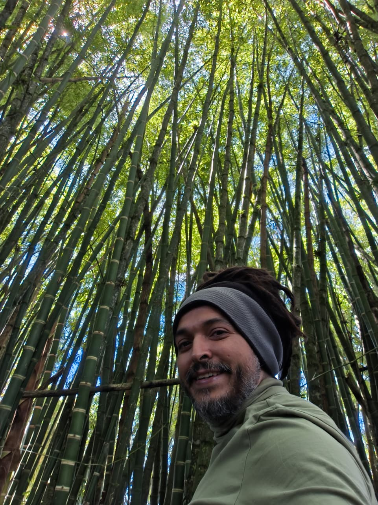
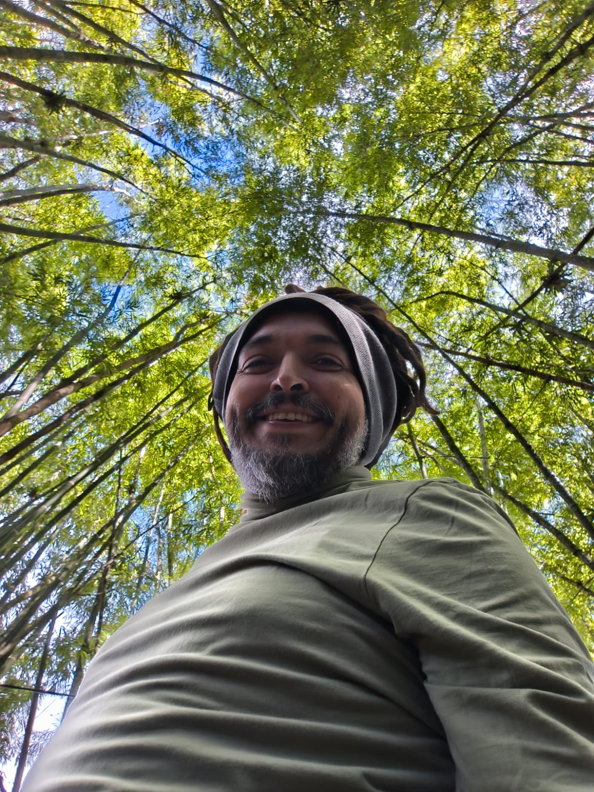

Estoy enfocado en indagar, comunicar y construir un dialogo de saberes con las personas que están alrededor de mí en los procesos y proyectos que participo. He sido asesor, coordinador, productor, curador, investigador, guionista, museógrafo, docente, gestor social, gestor cultural, mediador, guía y asistente de dirección de varios proyectos de investigación, museísticos, de planeación e infraestructura, patrimoniales y audiovisuales, comunicacionales y culturales. En términos de los intereses que me apasionan y atraviesan, encuentro la investigación y producción de contenidos, la trasmisión de información y la búsqueda de conocimiento, acompañado de la voluntad de servicio y el trabajo en equipo. Estudio el Doctorado en comunicación y narrativas en la Universidad de Antioquia. Soy magíster en Ciencias de la información, con énfasis en Memoria y Sociedad de la Universidad de Antioquia. Me especialicé en el CLACSO en Memorias Colectivas, Derechos Humanos y Resistencias (Brasil), y tengo un pregrado en Historia de la Universidad Nacional de Colombia. Mantengo un blog de Investigación, Narrativas modernas y Crítica al presente Utopias y Heterotopias Urbanas Utopías y Heterotopías Urbanas. Soy miembro del Grupo de Investigación en Información, Conocimiento y Sociedad de la UdeA, en la línea de investigación de MinCiencias. Me desempeño como productor de la Muestra La Imagen de la Memoria del Área de Comunicaciones de la Asociación Campesina de Antioquia – ACA La Imagen de la Memoria, participo de la Asociación Cultural Tarmac, organización que trabaja desde la música, las artes y la culturas Tarmac Reggae, hago parte del colectivo Distrito Candelaria, el cual trabaja desde la planeación y educación por las memorias, los patrimonios y la apropiación cultural de los barrios del centro de Medellín y, soy el líder y representante del grupo Rememora. Tuve la oportunidad de ser joven investigador de Colciencias por tres años con el grupo de Investigación Narrativas modernas y crítica la presente (2009-2012) de la Universidad Nacional; ser ganador de becas de investigación y creación de la Alcaldía de Medellín (2013-2023), y de ser coordinador de procesos y contrataciones relacionadas con el desarrollo social, las artes y las prácticas culturales con entidades descentralizadas del municipio como la Empresa de Desarrollo Urbano (EDU) y la Biblioteca Pública Piloto (BPP); de la misma forma que he contribuido en proyectos y procesos con empresas y organizaciones no gubernamentales como las corporaciones Simón Bolívar, Red Juvenil, Diáfora, Ciudad Comuna, Mundo Austral, Parque Explora, Fundación Mi Sangre, Fundación Futuro para la niñez, Corporación Presencia... lo que acredita en mí, la conexión del saber y la formación académica con la planificación, el seguimiento, la investigación y la extensión a la comunidad. Dentro de mis experiencias laborales he sido acompañante a la intervención y gestor social de obras de infraestructura pública para la EDU en proyectos de mejoramiento de parques, plan integral del centro, construcción de jardines infantiles, y en creación de contenidos y experiencias sobre el edificio Mónaco y el parque cívico Inflexión; coordinador de proyectos y planes de desarrollo cultural y comunicaciones en las comunas 8 Villa Hermosa y Comuna 5 Castilla; docente en temas de memoria, contexto social, museología, documental social participativo, planeación local, investigación y narrativa audiovisual; gestor cultural de memoria y patrimonio; productor de experiencias y propuestas museables relacionadas con el conflicto social y armado, la memoria, la guerra, las minorías, la inclusión y las alternativas de las organizaciones sociales y de víctimas.
Me entusiasma plasmar, materializar y transmitir en pro del desarrollo social y cultural. La observación, la crítica, la lectura, la creatividad, las metodologías en educación, el acompañamiento y la co-creación con grupos, personas, estudiantes, funcionarios, empresarios y directivos de todas las edades, hacen parte de las virtudes y herramientas que se hacen visibles en mi hoja de vida profesional y artística. Me hace feliz la cultura y la gente.